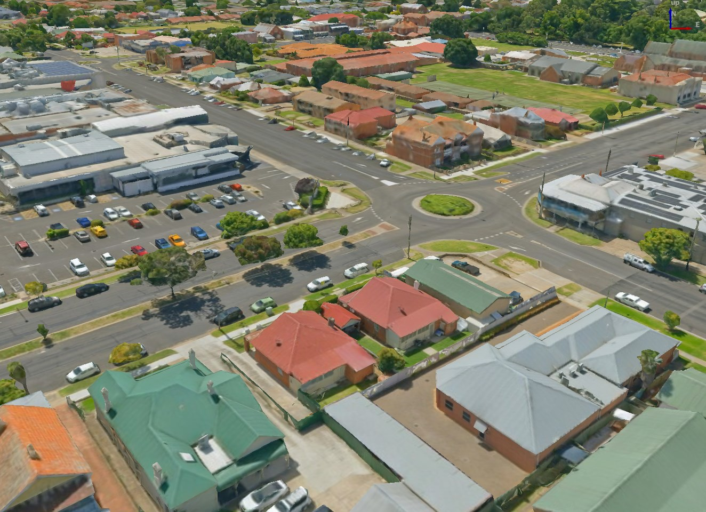
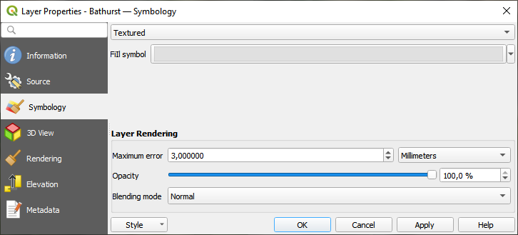
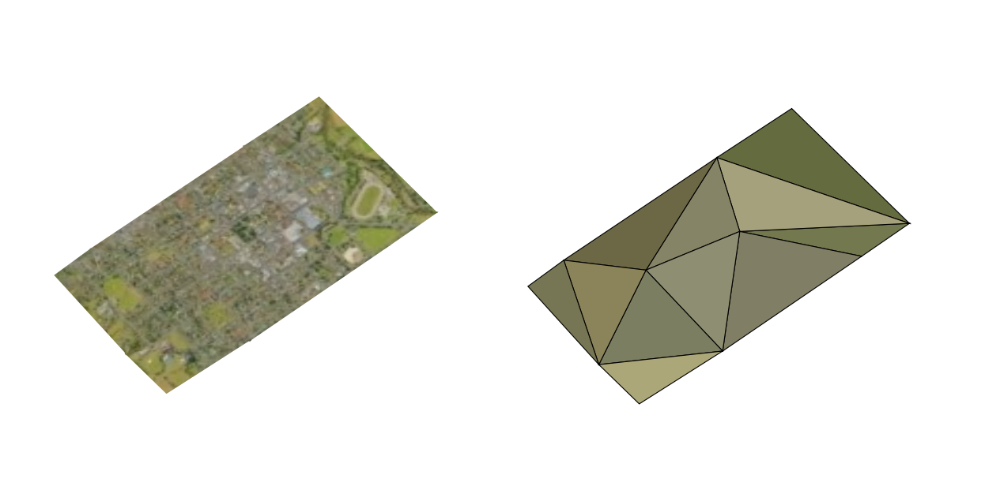
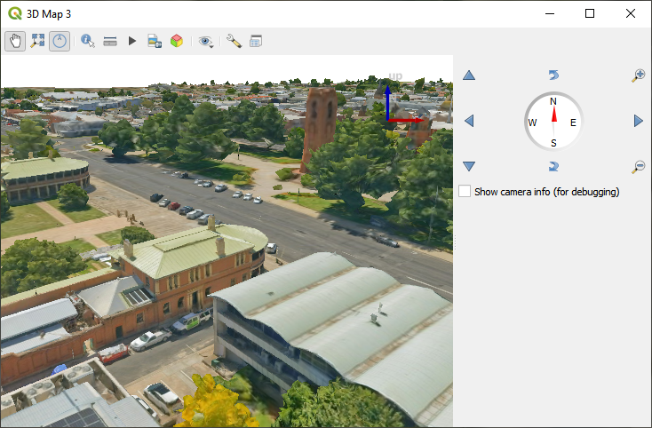

重要
翻訳は あなたが参加できる コミュニティの取り組みです。このページは現在 42.65% 翻訳されています。
17. 3Dタイルの操作
17.1. 3Dタイルとは何か？
3D tiles are specification for streaming and rendering large-scale 3D geospatial datasets. They use a hierarchical structure to efficiently manage and display 3D content, optimising performance by dynamically loading appropriate levels of detail. This technology is widely used in urban planning, architecture, simulation, gaming, and virtual reality, providing a standardised and interoperable solution for visualising complex geographical data.

図 17.1 3Dタイルの例
See 3Dタイルシーンサービスの使用 for instructions on how to add these data sources to QGIS.
17.1.1. State of 3D Tiles Support
Currently, QGIS supports two formats of 3D tiles:
"Cesium" 3D Tiles are used primarily for complex 3D models of buildings or whole cities. Such datasets can be provided by cloud-based platforms such as Cesium Ion or Google (Photorealistic 3D Tiles).
Quantized Mesh tiles are used for terrain elevation data.
Supported 3D Tiles features:
QGIS currently has partial support for 3D Tiles 1.0 and partial support for 3D Tiles 1.1.
For 3D Tiles 1.0, the tile format Batched 3D Model (
b3dm) is supported. The tile formats Instanced 3D Model (i3dm), Point Cloud (pnts) and Composite (cmpt) are not supported yet.For 3D Tiles 1.1, the
3DTILES_content_gltfextension is supported, so tile contents may also be encoded as glTF 2.0 (text or binary). TheEXT_mesh_gpu_instancingextension is not supported yet.Currently only explicit tiling is supported. Implicit tiling is not supported yet.
Currently only tilesets using EPSG:4978 are supported.
17.2. 3D Tiles Properties
The 3D tiles Layer Properties dialog provides the following sections:


17.2.1. 情報プロパティ
情報 タブは読み取り専用で、現在のレイヤの要約された情報やメタデータをさっと掴むことができる興味深い場所です。提供される情報には、以下のものがあります：
based on the provider of the layer: name, URL, source type and path, number of zoom levels
custom properties, used to store in the active project additional information about the layer. More properties can be created and managed using PyQGIS, specifically through the setCustomProperty() method.
座標参照系（CRS）：CRSの名前、単位、投影法、精度、参照（静的か動的か）
picked from the filled metadata: access, extents, links, contacts, history...
17.2.2. ソースプロパティ
The  Source tab displays basic information about
the selected 3D tile, including:
Source tab displays basic information about
the selected 3D tile, including:
レイヤパネル で表示される レイヤ名
the Coordinate Reference System: Displays the layer's Coordinate Reference System (CRS). You can change the layer's CRS, by selecting a recently used one in the drop-down list or clicking on the
 Select CRS button (see 座標参照系セレクタ).
Use this process only if the layer CRS is wrong or not specified.
Select CRS button (see 座標参照系セレクタ).
Use this process only if the layer CRS is wrong or not specified.
17.2.3. シンボロジプロパティ

図 17.2 3D Tile Layer Symbology
By default, the layer is styled using texture, but you can change it
to see the wireframe mesh behind the scene by choosing Wireframe
in the drop-down menu. You can also, change the mesh fill and line symbols
similar to the vector polygons.
Checking  Use texture colors will render each mesh element
with the average value of the full texture.
This is a good option to try when dealing with a large dataset and
want to get a quick overview of the data.
Use texture colors will render each mesh element
with the average value of the full texture.
This is a good option to try when dealing with a large dataset and
want to get a quick overview of the data.

図 17.3 3D Tiles - textured and wireframe
From the Symbology tab, you can also set some options that invariably act on all features of the layer:
Maximum error: This parameter determines the level of detail displayed in the 3D model. Similar to point clouds, 3D tiles often contain more information than necessary for visual representation. By adjusting this setting, you control the balance between display density and rendering speed. A larger value (e.g., 5 mm) may introduce noticeable gaps between elements, while a smaller value (e.g., 0.1 mm) could lead to the rendering of an excessive number of details, potentially slowing down the rendering process. Different units can be selected to tailor the setting to your specific needs.
Opacity: Adjusts the visibility of the underlying layer on the map canvas using this tool. Use slider to tailor the visibility of your scene layer according to your preferences. Alternatively, specify the exact percentage of visibility through the menu next to the slider.
Blending mode: You can achieve special rendering effects with these tools that you may previously only know from graphics programs. The pixels of your overlaying and underlying layers are mixed through the settings described in 混合モード.
17.2.4. 3Dビュープロパティ
Maximum screen space error: Determines the threshold for swapping terrain tiles with more detailed ones (and vice versa) - i.e. how soon the 3D view will use higher quality tiles. Lower numbers mean more details in the scene at the expenses of increased rendering complexity.
 Show bounding boxes: Shows 3D bounding boxes of the
terrain tiles (useful for troubleshooting terrain issues).
Show bounding boxes: Shows 3D bounding boxes of the
terrain tiles (useful for troubleshooting terrain issues).
To view the data you can open  New 3D map view.
New 3D map view.

図 17.4 3Dマップビュー
17.2.5. レンダリングプロパティ
:縮尺に応じた表示設定` では、 最大縮尺（含まない） と 最小縮尺（含む） を設定することができ、地物が表示される縮尺の範囲を定義します。それらはこの範囲外で非表示になります。 現在のキャンバススケールを使う ボタンを使用すると、現在のマップキャンバスの縮尺を可視範囲の境界として使用することができます。詳しくは 表示縮尺セレクタ を参照してください。
現在のキャンバススケールを使う ボタンを使用すると、現在のマップキャンバスの縮尺を可視範囲の境界として使用することができます。詳しくは 表示縮尺セレクタ を参照してください。
17.2.6. 標高プロパティ
The  Elevation tab provides options to control
the layer elevation properties within a 3D map view.
Specifically, you can set:
Elevation tab provides options to control
the layer elevation properties within a 3D map view.
Specifically, you can set:
Elevation Surface: how the 3D layer vertices Z values should be interpreted as terrain elevation. You can apply a Scale factor and an Offset.
17.2.7. メタデータプロパティ
 メタデータ タブには、レイヤに関するメタデータレポートの作成・編集オプションがあります。詳細は メタデータ を参照してください。
メタデータ タブには、レイヤに関するメタデータレポートの作成・編集オプションがあります。詳細は メタデータ を参照してください。